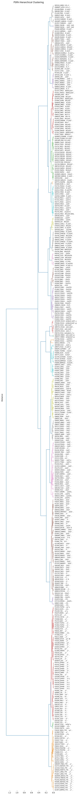

from katlas.data import *
import pandas as pd
from katlas.clustering import *Hierarchical clustering of PSSM
df = pd.read_parquet('out/CDDM_pssms.parquet')df| -20P | -20G | -20A | -20C | -20S | -20T | -20V | -20I | -20L | -20M | ... | 20H | 20K | 20R | 20Q | 20N | 20D | 20E | 20pS | 20pT | 20pY | |
|---|---|---|---|---|---|---|---|---|---|---|---|---|---|---|---|---|---|---|---|---|---|
| index | |||||||||||||||||||||
| P12931_SRC | 0.054538 | 0.081380 | 0.060077 | 0.012356 | 0.036216 | 0.032382 | 0.055816 | 0.052407 | 0.083511 | 0.023434 | ... | 0.013351 | 0.076992 | 0.060970 | 0.037383 | 0.036938 | 0.052960 | 0.086337 | 0.025367 | 0.015576 | 0.023142 |
| P29320_EPHA3 | 0.044276 | 0.088013 | 0.065335 | 0.008639 | 0.037797 | 0.036717 | 0.072354 | 0.048596 | 0.075594 | 0.026998 | ... | 0.014132 | 0.083098 | 0.059356 | 0.031091 | 0.033917 | 0.056529 | 0.100622 | 0.025438 | 0.013567 | 0.015828 |
| P07332_FES | 0.047231 | 0.082519 | 0.070575 | 0.011401 | 0.034745 | 0.039088 | 0.061889 | 0.053203 | 0.088491 | 0.026059 | ... | 0.013053 | 0.086266 | 0.055619 | 0.040863 | 0.038025 | 0.059024 | 0.085698 | 0.026674 | 0.013621 | 0.019296 |
| Q16288_NTRK3 | 0.044444 | 0.074644 | 0.074074 | 0.017094 | 0.033048 | 0.035328 | 0.060969 | 0.058120 | 0.084330 | 0.026781 | ... | 0.015682 | 0.091677 | 0.052473 | 0.030760 | 0.044029 | 0.057298 | 0.088661 | 0.021713 | 0.015682 | 0.018094 |
| Q9UM73_ALK | 0.045748 | 0.079765 | 0.073314 | 0.018182 | 0.032845 | 0.035191 | 0.067449 | 0.051026 | 0.076246 | 0.027566 | ... | 0.015634 | 0.090198 | 0.069152 | 0.030066 | 0.043897 | 0.051112 | 0.096212 | 0.026458 | 0.013229 | 0.017438 |
| ... | ... | ... | ... | ... | ... | ... | ... | ... | ... | ... | ... | ... | ... | ... | ... | ... | ... | ... | ... | ... | ... |
| Q15746_SMMLCK | 0.078947 | 0.052632 | 0.078947 | 0.026316 | 0.052632 | 0.026316 | 0.052632 | 0.052632 | 0.052632 | 0.000000 | ... | 0.000000 | 0.066667 | 0.022222 | 0.044444 | 0.133333 | 0.044444 | 0.000000 | 0.044444 | 0.022222 | 0.000000 |
| Q01973_ROR1 | 0.097561 | 0.097561 | 0.024390 | 0.000000 | 0.024390 | 0.146341 | 0.170732 | 0.024390 | 0.048780 | 0.000000 | ... | 0.000000 | 0.075000 | 0.050000 | 0.000000 | 0.050000 | 0.025000 | 0.125000 | 0.125000 | 0.000000 | 0.025000 |
| P15056_BRAF | 0.095238 | 0.071429 | 0.047619 | 0.000000 | 0.095238 | 0.047619 | 0.071429 | 0.000000 | 0.095238 | 0.047619 | ... | 0.000000 | 0.075000 | 0.075000 | 0.025000 | 0.025000 | 0.075000 | 0.075000 | 0.050000 | 0.000000 | 0.000000 |
| O14976_GAK | 0.075000 | 0.075000 | 0.175000 | 0.000000 | 0.025000 | 0.025000 | 0.100000 | 0.025000 | 0.050000 | 0.175000 | ... | 0.000000 | 0.024390 | 0.024390 | 0.000000 | 0.170732 | 0.195122 | 0.024390 | 0.048780 | 0.024390 | 0.000000 |
| Q6P0Q8_MAST2 | 0.046512 | 0.116279 | 0.069767 | 0.000000 | 0.023256 | 0.069767 | 0.069767 | 0.000000 | 0.046512 | 0.046512 | ... | 0.000000 | 0.048780 | 0.219512 | 0.000000 | 0.048780 | 0.024390 | 0.024390 | 0.024390 | 0.000000 | 0.000000 |
329 rows × 943 columns
Z = get_Z(df)data = Data.get_ks_dataset()data['kinase_id'] = data['kinase_uniprot'] + '_' + data['kinase_protein'].str.split().str[0]
cnt = data['kinase_id'].value_counts()labels= get_pssm_seq_labels(df,count_map=cnt,thr=0.2)from katlas.plot import *plot_dendrogram(Z,dense=5,labels=labels,title='CDDM Hierarchical Clustering')
save_pdf('out/CDDM_hierarchical.pdf')
PSPA
df2 = Data.get_pspa_all_scale()info = Data.get_kinase_info()kmap = info.set_index('kinase')['uniprot']df2.index = df2.index.str.split('_').str[0].map(kmap) + "_" + df2.indexZ2 = get_Z(df2)labels2= get_pssm_seq_labels(df2,thr=0.2)plot_dendrogram(Z2,dense=5,labels=labels2,title='PSPA Hierarchical Clustering')
save_pdf('out/PSPA_hierarchical.pdf')